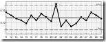

vamo, vamo, vamo…
Posts tagged desabafo
Conte a todo mundo o que você está fazendo e que pretende entrar em forma
48 years
by Alecão
in Ex-sedentário
O Claudio outro dia me passou os 10 conselhos de Karnazes e disse que aquilo serve para ele como um mantra que ele repete sempre que pode.
A ideia era imprimir e “colar no guarda-roupa” mas resolvi fazer diferente. Resolvi “colar no blog“.
Sobre o conselho 4 (Conte a todo mundo o que você está fazendo e que pretende entrar em forma). Posso dizer que foi a minha primeira ideia. Antes mesmo de começar tudo, eu criei este blog e com certeza o resultado é compensador, já temos casos de pessoas que se motivaram lendo o blog e a mim mesmo serve como combustível. Portanto o quarto conselho eu já cumpro com toda certeza.
Hoje acordei às 5 e meia, foi horrível, xinguei mentalmente a mim mesmo por ter criado todo este contexto, a sorte foi a roupa posta ao meu lado da cama, pronta para vestir. Dei de cara com o orvalho (sereno), bem, já estava na rua, na grama meu tenis encharco… não teve jeito fui para calçada arriscando lesionar o joelho. Mas fiquei feliz por ter conseguido treinar (T012) por 34 minutos sem parar.
T008 e T009 – Voltando depois de um tempo parado
38 years
by Alecão
in Ex-sedentário
Mudanças… mudanças… mudanças… Não fui feito para isso. Gosto de padrões, gosto de tudo do mesmo jeito, dia após dia. Quando a coisa muda, ansiedade, angustia e por ai vai… Não vou explicar o porquê parei, mas quero reforçar que é o blog e os comentários que leio que me fazem continuar. Ontem fui com o Claudio na Running Show e ver um ambiente como aquele, me ajudou a motivar. Devemos “respirar” para motivar. Vou escrever um post reportagem sobre o que vimos e fizemos na Running Show em breve.
Saindo do Running Show, acabei me enrolando com os trocados do busão. Resultado, estava no terminal Sacomã sem dinheiro para pagar a integração com o intermunicipal, perto da meia-noite e os caixas eletrônicos do terminal estavam em manutenção. Tive que correr (literalmente, T008) até a Drogasil da Silva Bueno, ufa, mas deu tempo graças a Deus.
Hoje no sabadão com sol (viva!) catei a mulher e as crianças e fui no Parque Chico Mendes. O sol estava forte e acabei correndo (T009) por 33 minutos. Sei, diminuiu! Mas não estou triste por isso. Tudo é trabalho para a mente e o corpo acompanha na sequência. Rumo a Sansung 10k, sei que tenho apenas 57 dias e cada dia precisa ser trabalhado, com conciência e prudência chegarei lá. Após o treino, brincar com as crianças não tem preço. É exatamente isso que eu busco.


Reflita Claudião
88 years
by Claudião
São quatro da manhã quando o telefone fixo toca me lembrando que eu havia decidido treinar:
A cabeça dói
Estou zonzo
O olhos ardem
Faz frio
Sinto-o
As roupas estão espalhadas
Cadê a jaqueta?
O frio aumenta
Incomoda
Ainda tenho de varrer as folhas que estão perto do portão
Lavar a louça (pouca)
Passar a camisa
Chegar na D. Lola às 06:15 horas para deixar o carro com a Mari e cuidar do Henrique até ás 08:00 horas.
O Bento dorme
O Gordo chora.
Mas treinei!!!!!!!
O Bento dorme
Ganho a rua
O frio me segue
Comando policial na rua?!
Sou cumprimentado
Corpo frio
Passo curto…
Mas curto
O silêncio reza
A paz impera
Orgulho!!!!!!
Treino feito (05:00 horas)
corpo agradece o carinho.
Em tempo:
Recolho as folhas
lavo a louça
estico as cobertas
tomo água
tomo banho
mais água
encontro uma camisa já passada
visto a roupa
acordo o Bento
pego as chaves
troco a água do Bento
pego a mochila
tranco a porta
abro portão
tiro o carro
fecho o portão
entro no carro.
Entrego-o na hora certa (06:15). Ufa! Correr sozinho no frio da madrugada estava mais fácil.
Conclusão: 99% de nós, pessoas sedentárias, conseguem o “mais difícil”, mas não se oportunizam o “mais fácil”.
Sexta é mais fácil!
48 years
by Claudião
O psicológico é tudo. Hoje acordei às 04:35 horas. Sim. Senti vontade de chorar de novo, mas antes que voltasse a dormir tomei um banho caprichado. Se é certo que se eu fosse receber do meu amor carinho no meu corpo eu me banharia antes, porque não fazê-lo antes que eu mesmo o acarinhe. Devo e relamente estou encarando o exercício como um “acarinhar-me”. De carinho em carinho, como estes, voltarei a dormir feito o Henrique. Disso eu tenho certeza. É só eu não fraquejar.
Banho tomado e de roupinha de corrida, dentro da qual me sinto apertado como se fosse uma linguiça calabresa. Pudera. O “GG” de roupa com tecidos sintéticos (agora esta na moda falar tecidos tecnológicos) parece mais um TAMANHO P – mas de pigmeu. Aliás, da barriga só não aparece um gomão de toucinho porque eu uso o cinto de utilidades do Batman (no qual se carrega garrafinha, chave, celular etc.) para amarrar a linguiça calabresa no meio, segurando desse modo a camiseta no devido lugar.
Deixando os percalços gordalísticos de lado, estava eu na rua às 05:00 horas. Com muita neblina decidi ficar indo e voltando numa mesma rua, porque além de larga e nenhum movimento, era a mais iluminada. Como minha roupa não reflete eu fiquei com medo de ser atropelado. Afinal, como eu disse no post anterior de madrugada eu sou o dono da rua, e como tal, vou pelo meio dela, é lógico.
Uma delícia que não experimentava há bastante tempo. Gritar “BOM DIA SEU JOÃO!” Senhor amabilíssimo, de sorriso largo e sinsero, que todo dia abre às 05:30 em ponto sua empresa de metarlugia. E hoje, foi ainda mais especial. De lá de dentro ele respondeu gritando. “Que legal. Você voltou a correr. Bom dia e não desista novamente, hein?!”.
Isso foi sensacional. Quarenta e cinco minutos depois eu já estava dentro de casa novamente, satisfeitíssimo.
Cuidados básicos
58 years
by Claudião
in Ex-sedentário
Gostei da ilustração que o Alex colou ao lado do meu relato de treino em forma de cordel. São 21:30 horas e quero ir pra rua treinar, mas uma dor de cabeça está me azedando. A causa dela desconfio ser as poucas horas que dormi nos últimos dois dias. Talvez seja mais sensato dormir e treinar de madrugada.
Um mês antes da inauguração deste blog eu fui ao cardiologista. Ele me disse que a amnésia foi mais um sinal do corpo me avisando para cuidar dele do que propriamente um problema neurológico. Deu-me ainda um pedido de exame sangue completo, mas que eu o fizesse somente depois de um mês de efetiva dieta.
Muito bem. Hoje marquei o retorno para o dia 29/09/2009, quando levarei o resultado do exame. O que eu quero mesmo é ver a balança marcando menos que os 129 quilos da primeira consulta, no dia 08/07/09. Como tenho fé de que estarei bem, quero dizer, menos mal, pedirei uma requisição para fazer um teste de esteira, o qual espero não acusar nenhum risco cardíaco.
Um desabafo: Por que é tão chato fazer alongamento. Vivo falando para o Alekão da importância disto, na tentativa mesmo é de incutir a idéia em mim mesmo.
Estou feliz com os incentivos nos comentários. Pode mandar ver, gente. Eles são sempre bem-vindos. Não tenham pudor. Pode ser do tipo : “Pô, gordo, para de falar e corra“. Só não vale piadinha como aquela: “Tá finin hein Balão!” Isso não. Magoa.
Vou dormir… Amanhã eu estréio o par de meias de corrida que comprei.
Fora de especificação
48 years
by Alecão
in Ex-sedentário
 Ontem não treinei, estou treinando dia sim, dia não. E aproveitei para ir comprar roupa. Fui no shopping e, apesar de óbvio, insisti na idéia esdruxula de visitar as grandes lojas (Renner, C&A e Riachuelo). Procurando calça, nem olhava o modelo e preço, ia direto no tamanho…48, 46, 46, 52, 50, 50, 48… Puxa o maior valor era 52… isso para alguns modelos, foi assim nas 3 lojas. Na hora lembrei da época que fazia software para CEP (controle estatístico de processo), e me veio na cabeça: “eu estou Acima do LSE (Limite Superior de Engenharia)”, é importante fazer piada nestas horas.
Vamos procurar lojas para gordos então, pensei. Ao penguntar, fui informado de 3 lojas para mulheres obesas e nenhuma para o público masculino. Vai entender.
A salvação foi a Riachuelo que tinha UM cabideiro com uma plaquinha em cima: Tamanhos Especiais. Difícil ler a palavra “especial” nesses casos, escreve logo “Para Gordos”, ficaria melhor. Nesse cabideiro tinha 2 tipos de calça, 1 jeans e 1 social e 2 camisas sociais. Peguei calças 56 e 58… Fiquei feliz que a 58 ficou enorme em mim, a 56 ficou boa, confortável… Pois então estou a 4 pontos acima do LSE.
Parece fácil
08 years
by Claudião
in Ex-sedentário
O sono faz parte do treinamento para corrida. Isso todo mundo sabe. Mas é mais dificil do que parece. Como estou sofrendo de apnéia obstrutiva do sono por conta dos quilos a mais, dormir é um sonho a ser alcançado.
Ontem eu decidi dormir. Fiquei na cama das 23:20 às 06:45. Uma vitória, só olhei o relógio seis vezes (01:36; 02:59; 03:30; 4:35; 05:00 e 06:10). Um treino satisfatório para mim.
Agora o próximo treino será uma perna na frente da outra.
Quero matar um…
28 years
by Alecão
in Ex-sedentário
Ontem, estava todo feliz e contente, jantei só um pouquinho, troquei de roupa e fui buscar o tênis que tinha deixado na lavanderia.
O tênis estava em uma bacia cheia d’agua, bem encharcado. Só tenho esse tênis. Chorei de raiva. Detalhe, ninguém colocou o tênis na bacia com agua.
Lavei o tênis e pendurei no varal, hoje de manhã estava chovendo. Vai entender. Cintrifuguei e coloquei atrás da geladeira, hoje a noite vai… Nem que a vaca tussa.
.jpg "DSC01710 (576x1024)")
.jpg "DSC01768 (1024x576)")
.jpg "DSC01790 (1024x576)")
.jpg "DSC01907 (1024x576)")
.jpg "DSC01945 (1024x576)")
.jpg "DSC01951 (1024x576)")
.jpg "DSCN5637 (1024x768)")


Últimos comentários